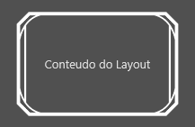
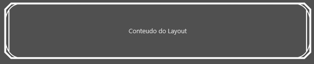
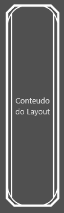
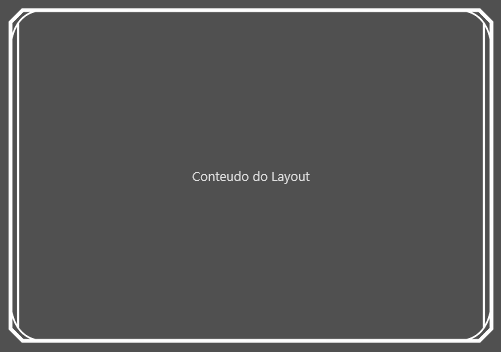

4 - Frame retangular dinâmico, usando vários arquivos de imagens
Frame retangular dinâmico, usando vários arquivos de imagens
Deseja-se formar um frame com a seguinte aparência:
Para isso, dividimos a figura em 8 partes
|  | leftLine.png (12x66) |
|---|---|
|  | rightLine.png (12x66) |
| lowerDir.png (29x32) | |
| lowerEsq.png (29x32) | |
| upperDir.png (29x32) | |
| upperEsq.png (29x32) | |
| lowerLine.png (80x5) | |
| upperLine.png (80x5) |
e usamos o seguinte arquivo de definição de frame:
| \<?xml version="1.0" encoding="UTF-8"?> \<frame width="138" height="130"> \<borders left="12" top="10" bottom="10" right="12"/> \<draw> \<!-- QUINAS --> \<!-- quina superior esquerda --> \<image left="0" top="0" right="29" bottom="32" overflowX="stretch"> \<anchors left="true" top="true"/> \<source url="upperEsq.png" left="0" right="29" top="0" bottom="32"/> \</image> \<!-- quina superior direita --> \<image left="109" top="0" right="138" bottom="32" overflowX="stretch" overflowY="stretch"> \<anchors left="false" right="true" top="true"/> \<source url="upperDir.png" left="0" right="29" top="0" bottom="32"/> \</image> \<!-- quina inferior esquerda --> \<image left="0" top="98" right="29" bottom="130"> \<anchors left="true" top="false" bottom="true"/> \<source url="lowerEsq.png" left="0" right="29" top="0" bottom="32"/> \</image> \<!-- quina inferior direita --> \<image left="109" top="98" right="138" bottom="130"> \<anchors left="false" right="true" top="false" bottom="true"/> \<source url="lowerDir.png" left="0" right="29" top="0" bottom="32"/> \</image> \<!-- LINHAS --> \<!-- linha horizontal superior --> \<image left="29" top="0" right="109" bottom="5" zOrder="-1" overflowX="stretch"> \<anchors left="true" right="true" top="true"/> \<source url="upperLine.png" left="0" right="80" top="0" bottom="5"/> \</image> \<!-- linha horizontal inferior --> \<image left="29" top="125" right="109" bottom="130" zOrder="-1" overflowX="stretch"> \<anchors left="true" right="true" top="false" bottom="true"/> \<source url="lowerLine.png" left="0" right="80" top="0" bottom="5"/> \</image> \<!-- linha vertical esquerda --> \<image left="0" top="32" right="12" bottom="98" zOrder="-1" overflowY="stretch" overflowX="stretch"> \<anchors left="true" right="false" bottom="true" top="true"/> \<source url="leftLine.png" left="0" right="12" top="0" bottom="66"/> \</image> \<!-- linha vertical direita --> \<image left="126" top="32" right="138" bottom="98" zOrder="-1" overflowY="stretch" overflowX="stretch"> \<anchors left="false" right="true" bottom="true" top="true"/> \<source url="rightLine.png" left="0" right="12" top="0" bottom="66"/> \</image> \</draw> \</frame> |
|---|
 \ \  \
Created with the Personal Edition of HelpNDoc: Effortlessly Edit and Export Markdown Documents